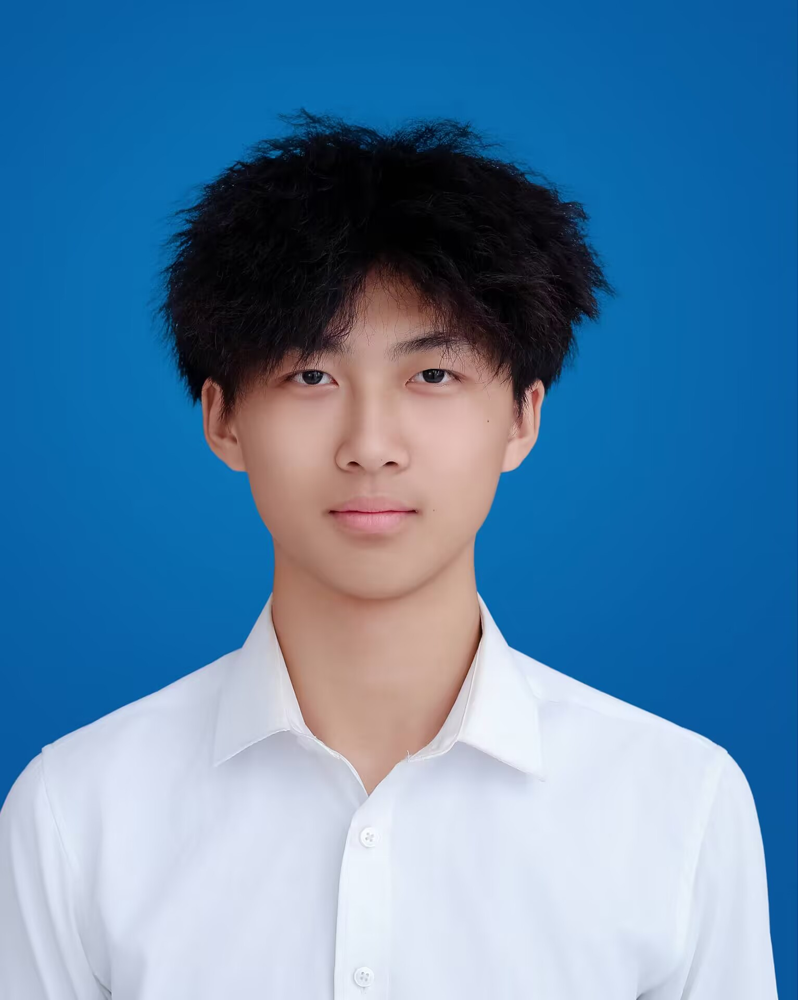

| 姓名 | 靳思同 | 性别 | 男 | 年龄 | 20 |  | |
|---|---|---|---|---|---|---|---|
| 籍贯 | 山东聊城 | 联系电话 | 13381966140 | 电子邮箱 | 1556387359@qq.com | ||
| 学历 | 本科 | 健康状况 | 良好 | 婚姻状况 | 未婚 | ||
| 求职意向 | 软件工程师 | 专业 | 软件工程 | 毕业院校 | 鲁东大学 | ||
| 技能证书 | 计算机二级工程师 | ||||||
| 个人特长与爱好 | 擅长 c++，跑步，篮球，乒乓球 | ||||||
| 项目经历 | 暂无 | ||||||
| 自我评价 | 在人际交往中，我秉持真诚友善的态度，积极融入集体，总能迅速与他人建立良好关系。与同学合作时，我尊重每个人的观点，耐心倾听，遇到分歧也能平和沟通，凭借团队协作多次出色完成任务。在生活里，我也乐于帮助他人，收获了诸多真挚情谊。学习上，我展现出强烈的进取精神。课堂上全神贯注，不错过任何知识要点，课后主动拓展学习领域，利用网络课程和书籍不断充实自己。面对难题，我从不退缩，通过钻研和请教逐步攻克，凭借这股劲头，学业成绩稳步提升，始终保持对知识的热忱与探索。 | ||||||